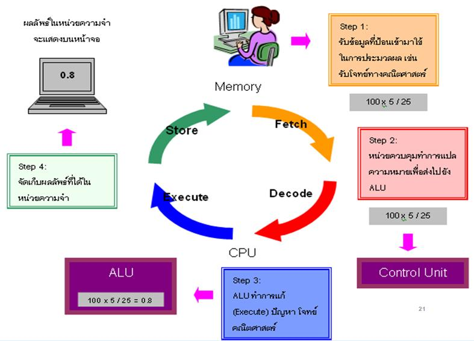
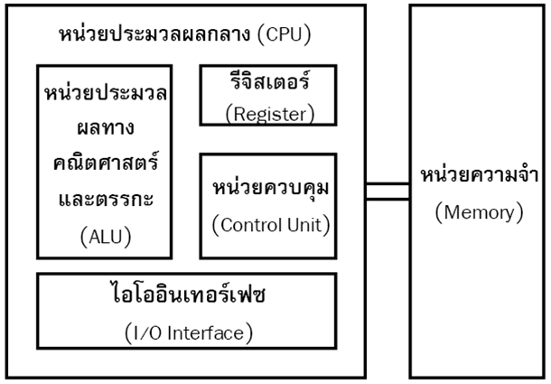

โครงสร้างของระบบคอมพิวเตอร์
หน่วยประมวลผลกลาง CPUหน่วยความจำหลัก Main Memory Input/Output หน่วยควบคุม Contro Unitหน่วยคำนวณและตรรกะ Anthmic and Logtc : AULรีจิสเตอร์ วัฏจักรขั้นตอนการประมวณผลของ CPU
1.การเฟตซ์(Fatch)
2.การแปลความหมาย(Decode)
3.การเอ็กซีคิวต์(Execule)
4.การจัดเก็บ(Store)

หน่วยวัดความเร็วของซีพียู
เมกะเฮิรตซ์ (MegaHertz : MHz) เป็นหน่วยความเร็วในไมโครคอมหรือ Clock Speed เป็นหน่วยวัดความเร็วซีพียูในคอมพิวเตอร์ทั่วไป
มิปส์ (Million of Struction Per Second :MIPS) เป็นหน่วยวัดซีพียูขนาดกลาง เช่นWorkstation , Mainframe
ฟลอปส์ (Floating Point Operations Per Second : FLOPS) เป็นหน่วยวัดความเร็วซีพียูในซุปเปอร์คอมพิวเตอร์
รูปแบบการประมวลผล
ประมวลผลแบบเดี่ยว (Single Processing) หรือ Sequential Processcing
ประมวลผลแบบขนาน (Parallel Processing)
การทำงานแบบไปป์ไลน์
ไปป์ไลน์ช่วยให้ CPU เฟ็ตซ์คำสั่งเข้ามาทำงานหลายๆ ตัวในเวลาเดียวกัน การส่งข้อมูลภายในระบบ
การส่งแบบขนาน
การส่งแบบอนุกรม
โครงสร้างบัส
ส่วนประกอบ System Bus
Address Bus
Data Bus
Control Bus
ประเภทของบัส
บัส ISA
บัส PCI
บัส AGP
บัส USB
บัส HPSB
วิธีการเข้าถึงหน่วยความจำ
การเข้าถึงแบบเรียงลำดับ เช่น เทป
การเข้าถึงโดยตรง เช่น ดิสก์
การเข้าถึงแบบสุ่ม เช่น หน่วยความจำ Ram
การเข้าถึงแบบแอสโซซิเอทีฟ เช่น หน่วยความจำแคช
โปรเซสเซอร์
ปี 1989 Intel ประกาศตัว 80486 ซึ่งเป็นซีพียูแบบ 32 บิต พร้อมเปิดตัวสิ่งที่เรียกว่า ”ไปป์ไลน์” (Pipeline)
ไปป์ไลน์ช่วยให้ซีพียูสามารถเฟ็ตช์คำสั่งเข้ามาทำงานได้หลาย ๆ คำสั่งในเวลาเดียวกันได้ โดยเอ็กซิคิวต์ในแต่ละคำสั่งในแต่ละสัญญาณนาฬิกา (Clock cycle)เรียกการทำงานแบบนี้ว่า “สเกลลาร์” (Scalar)
ปี 1993 ได้เปิดตัวซีพียูในยุคที่ 5 ที่เรียกว่า “Pentium” โดยนำไปป์ไลน์มาใส่ไว้ในซีพียูถึง 2 ตัว ทำงานแบบขนานพร้อม ๆ กัน โดยไม่ขึ้นต่อกัน ทำให้สามารถเอ็กซิคิวต์ได้ 2 คำสั่งใน 1 สัญญาณนาฬิกา
เรียกสถาปัตยกรรมนี้ว่า “ซุปเปอร์สเกลลาร์” (Superscalar)
องค์ประกอบของ CPU

ไปป์ไลน์ (Pipeline)
คือการทำงานแบบคาบเกี่ยวกัน (overlap) โดยการแบ่งซีพียูออกเป็นส่วนย่อย ๆ แล้วแบ่งงานกันรับผิดชอบ
เดิมไปป์ไลน์เป็นเทคนิคของสถาปัตยกรรมแบบ RISC ต่อมานำมาใช้กับสถาปัตยกรรมแบบ CISC
แบ่งเป็นภาคหลัก ๆ คือ
ขั้นตอนการทำงานของ Pipeline
ภาคเฟ็ตช์คำสั่ง หรือ Instruction Fetch ส่วนนี้จะทำหน้าที่รับคำสั่งใหม่ ๆ ทั้งจากหน่วยความจำหลัก หรือจาก Instruction Cache เข้ามา
ภาคถอดรหัสคำสั่ง หรือ Instruction Decode ส่วนนี้จะทำหน้าที่แยกแยะคำสั่งต่าง ๆ ของ CISC
ภาครับข้อมูล หรือ Get Operands ส่วนนี้ทำหน้าที่รับข้อมูลที่จะใช้ในการเอ็กซิคิวต์เข้ามาเก็บไว้
ภาคเอ็กซิคิวต์ หรือ Execute ส่วนนี้เป็นขั้นตอนที่ทำการเอ็กวิคิวต์ตามคำสั่งและโอเปอแรนด์ที่ได้รับมา
ภาคเขียนผลลัพธ์ หรือ Write Result เมื่อทำการเอ็กซิคิวต์เสร็จเรียบร้อยแล้ว ผลลัพธ์ที่ได้ก็จะนำไปเก็บไว้ในรีจิสเตอร์ หรือในแคช
โครงสร้างระบบคอมพิวเตอร์
องค์ประกอบของคอมพิวเตอร์
วงจรการทำงานของคอมพิวเตอร์
ความหมายและความเป็นมา
คอมพิวเตอร์
สรุป โครงสร้างระบบคอมพิวเตอร์
ภาษาคอมพิวเตอร์
ข้อมูล ผู้จัดทำ